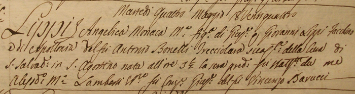

Adamo Bracali si sposò in seconde nozze nella chiesa di S.Agostino, domenica 3 luglio 1842, giorno nel quale si corse il Palio, con Angelica Lippi di 25 anni più giovane di lui e figlia di Mangiagatte. Anche da questa unione non nacquero figli.
